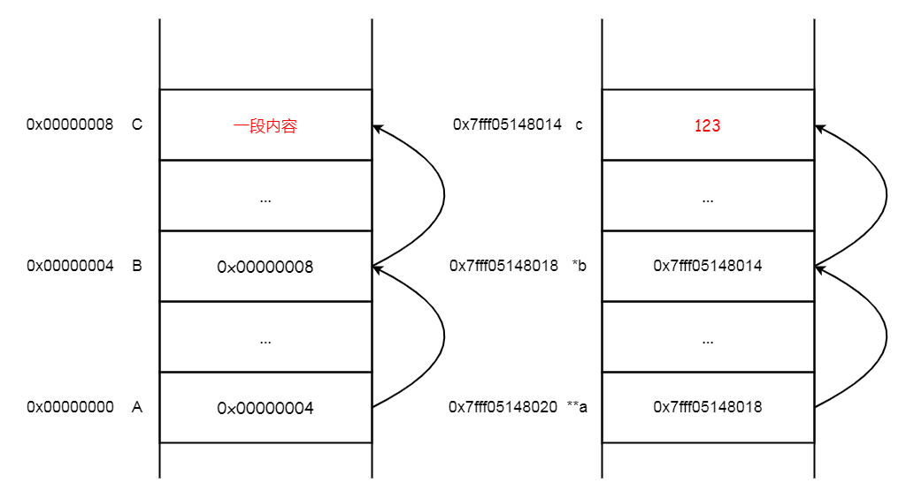

本文介绍了 C 语言中的一级指针和二级指针，并通过示例说明了为什么在函数参数中使用一级指针，函数内部对指针形参本身的修改不会影响外部指针的指向。同时，也演示了如何使用二级指针在函数内部改变指针的指向以及进行内存分配操作。
概念
在如下的 A 指向 B、B 指向 C 的指向关系中，首先：
C 是一个变量，里面是「一段内容」，这段内容需要存储在一个地址空间里。C 的起始地址是 0x00000008。
B 是一个指针变量，其内容是 C 的地址 0x00000008（专业术语：B 指向 C），但是 B 本身也要占空间的啊，所以 B 也有地址。B 的起始地址是 0x00000004。
那么，到此为止都比较好理解：
1 2 3
B == 0x00000008; // B 的内容，也就是 C 的地址 0x00000008 *B == 一段内容; // B 解引用，也就是 B 指针指向的 C 的值 &B == 0x00000004; // B 取地址，B 本身的地址是 0x00000004
查看指针变量 B，就是查看 B 的内容（这里是 C 的地址）。对指针变量 B 解引用，就是查看它的内容（内容是一个地址）下的内容。

A 是二级指针变量，其中存放着 B 的地址 0x00000004。A 本身也有地址，是 0x00000000。
1 2 3 4
*A == B == 0x00000008; // A 解引用，也就是 A 指针指向的 B 的内容（即 B 的内容是 C 的地址） **A == *B == 一段内容; // B 解引用，也就是 B 指针指向的 C 的内容 A == &B == 0x00000004; // A 存的是 B 的地址，B 的地址是 0x00000004 &A == 0x00000000; // A 取地址，A 本身的地址是 0x00000000
上面三个变量的 C 语言定义如下：
1 2 3 4 5 6 7
int c = 123; // 一段内容 int *b = &c; int **a = &b; // 按顺序定义，定义二级指针前要定义一级指针
for (int i = 0; i < len; i++) { printf("my_malloc1(), before: p1[%d] is %s\n", i, p1[i] == NULL ? "NULL" : "NOT NULL"); my_malloc1(p1[i]); printf("my_malloc1(), after: p2[%d] is %s\n", i, p1[i] == NULL ? "NULL" : "NOT NULL"); if (p1[i]) {free(p1[i]);} }
for (int i = 0; i < len; i++) { printf("my_malloc2(), before: p2[%d] is %s\n", i, p2[i] == NULL ? "NULL" : "NOT NULL"); my_malloc2(&p2[i]); printf("my_malloc2(), after: p2[%d] is %s\n", i, p2[i] == NULL ? "NULL" : "NOT NULL"); if (p2[i]) {free(p2[i]);} }
return0; }
打印结果：
1 2 3 4 5 6 7 8 9 10 11 12
my_malloc1(), before: p1[0] is NULL my_malloc1(), after: p2[0] is NULL my_malloc1(), before: p1[1] is NULL my_malloc1(), after: p2[1] is NULL my_malloc1(), before: p1[2] is NULL my_malloc1(), after: p2[2] is NULL my_malloc2(), before: p2[0] is NULL my_malloc2(), after: p2[0] is NOT NULL my_malloc2(), before: p2[1] is NULL my_malloc2(), after: p2[1] is NOT NULL my_malloc2(), before: p2[2] is NULL my_malloc2(), after: p2[2] is NOT NULL